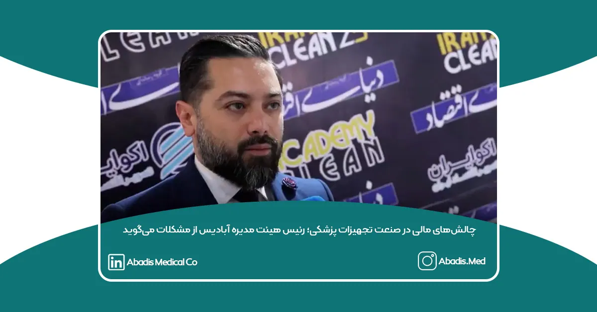

تحول در کنترل عفونت بیمارستانی؛ نوآوری آبادیس و چالشهای پیشروی صنعت تجهیزات پزشکی
نوید حسنعلی، معاونت بازرگانی و فروش و رئیس هیئت مدیره شرکت دانشبنیان مخازن طبی آبادیس، در حاشیه ایران کلین ۲۰۲۵ در گفتوگو با اکوایران از دستاوردهای این شرکت در حوزه کنترل عفونت بیمارستانی و چالشهای پیشروی صنعت تجهیزات پزشکی سخن گفت.
قدردانی از مراکز درمانی با کاشت درخت در زاگرس
شرکت مخازن طبی آبادیس، به عنوان اولین و بزرگترین تولیدکننده کیسههای ساکشن یکبار مصرف در ایران، نقش مهمی در کنترل عفونت بیمارستانی و مدیریت سیالات پزشکی ایفا کرده است. نوید حسنعلی در این مصاحبه اظهار داشت:
“ما در آبادیس همواره تلاش کردهایم با ارائه محصولات دانشبنیان، از انتشار سیالات عفونی در محیط زیست جلوگیری کنیم. در همین راستا و به پاس قدردانی از مراکزی که از محصولات ما استفاده میکنند، اقدام به کاشت درخت در منطقه زاگرس به نام تکتک این مراکز کردهایم. همچنین، روند رشد و توسعه این نهالها را با این مراکز به اشتراک میگذاریم تا نقش آنها در حفاظت از محیط زیست بهوضوح دیده شود.”
چالش بزرگ صنعت تجهیزات پزشکی؛ وصول مطالبات و تأمین نقدینگی
حسنعلی در ادامه به یکی از مهمترین مشکلات صنعت تجهیزات پزشکی اشاره کرد:
“یکی از بزرگترین چالشهای ما، که متأسفانه کل صنعت تجهیزات پزشکی را درگیر کرده، بحث وصول مطالبات و پرداخت معوقات از سوی مراکز درمانی، بهویژه بیمارستانهای دولتی است. ارائه محصولات باکیفیت و تجهیز مراکز درمانی با بالاترین استانداردها نیازمند تأمین مالی پایدار است، اما تأخیر در پرداخت مطالبات، فشار زیادی بر شرکتهای فعال در این حوزه وارد میکند.”
وی همچنین از راهاندازی یک کارزار اجتماعی برای حل این مشکل خبر داد و گفت:
“برای عبور از این چالش، کارزاری را راهاندازی کردهایم تا همه شرکتهای تجهیزات پزشکی در کنار یکدیگر، با اتحاد و همصدایی، راهکاری برای وصول مطالبات و بهبود شرایط مالی این صنعت بیابند. امیدواریم این حرکت جمعی بتواند به نتیجهای مؤثر برای صنعت تجهیزات پزشکی کشور منجر شود.”
شرکت مخازن طبی آبادیس همچنان به مسیر خود در ارائه راهکارهای نوین برای کنترل عفونت بیمارستانی و حفظ محیط زیست ادامه میدهد و در تلاش است با همکاری سایر فعالان این حوزه، چالشهای موجود را برطرف کند.